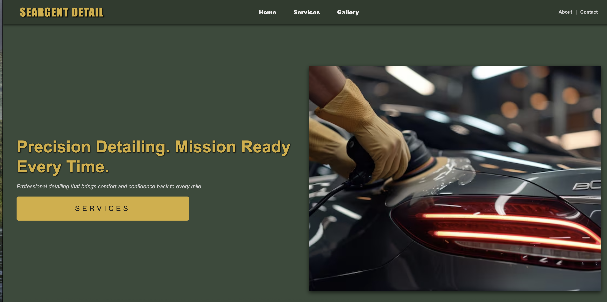

Peer Review 1
Student: Blanding, Josiah

https://jblandin-art.github.io/itis3135/
Evaluation
- Contrast & Readability: The gold text on dark green background has strong contrast and is easy to read — good job on color choices.
- Font Usage: Fonts are consistent across heading, nav, and buttons. Sizing is readable and looks professional.
- Layout and CRAP Principles:
- Contrast: Excellent use of bold yellow + dark green.
- Repetition: Nav and brand styling is consistent across header/footer.
- Alignment: Main text is aligned well to the left; hero image balances right side.
- Proximity: Good spacing between slogan, subtext, and button — everything is well grouped.
- Header/Main/Footer: Clearly defined sections. Navigation is top right and consistent across pages.
- Header h1 Branding: "SEARGENT DETAIL" appears in the top left, styled like a brand title (good).
- Heading Levels: Main page heading is appropriately prominent (looks like h2 or styled text).
- Tagline: "Precision Detailing. Mission Ready Every Time." works well as a brand slogan.
- Navigation: Pages linked: Home, Services, Gallery, About, Contact — all clearly visible and spaced.
- Client Project Progress:
- Looks like at least 3-4 pages are complete.
- Good balance of image + text. Hero image is high-quality and relevant to car detailing.
- “Services” button is styled nicely and encourages click-through.
- Interactivity: Would love to see hover effects or a contact form in later updates.
- Mobile Responsiveness: Not tested, but looks like a flex/grid layout — recommend testing it on smaller screens.
- Start: Start adding detailed content under "Services" and “Gallery.” A contact form with client name/email field would be great.
- Stop: Avoid using images without alt text (if any are missing); this helps accessibility.
- Continue: Continue using this clean design style — it really suits the brand and makes the site feel premium.